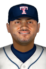

|
|
|  |
Castro Extends Hit Streak to 20 Games Saturday, June 6th, 2020 Willi Castro's consecutive-game hitting streak has now climbed to 20 games. The Toledo shortstop smacked 3 hits against the Pawtucket Red Sox in today's game at Fifth Third Field, but he expressed mixed emotions about the streak after watching the Mud Hens drop the game, 6-5. "I feel good about the streak, but don't feel good when we lose," he told reporters. "I'd love to get a hit as well as a win next time so I can celebrate properly." Willi Castro hit an RBI triple in the 1st, singled in the 2nd, struck out in the 4th, flied out in the 7th and singled in the 9th. This year Castro is hitting .324 with 7 home runs and 30 RBIs to his credit. He has gotten on base at a .384 clip and scored 30 runs. |


|